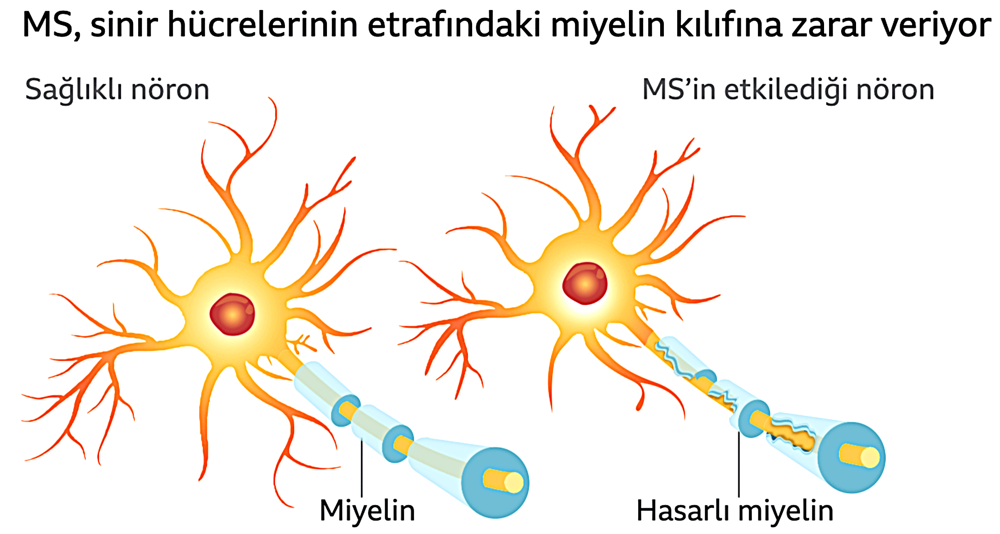
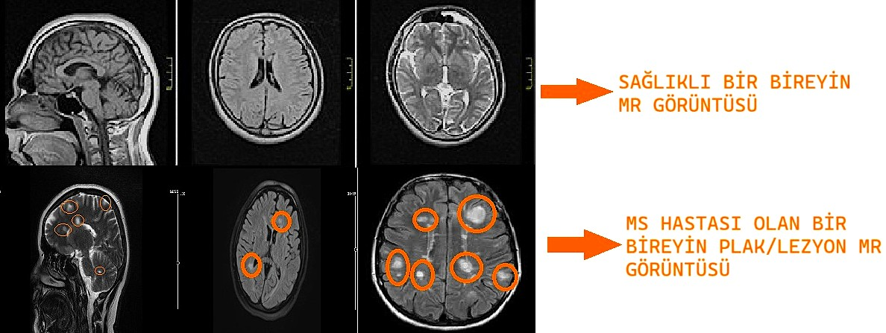

Multipl Skleroz (MS) Nedir ve Neden Oluşur?
Multipl Skleroz (MS), merkezi sinir sistemini (beyin ve omurilik) etkileyen, kronik bir otoimmün hastalıktır. MS'in kesin nedeni bilinmemekle birlikte, "bağışıklık sistemi, çevresel ve genetik faktörlerin karmaşık bir etkileşimi" sonucu ortaya çıktığı kabul edilmektedir.
MS, bağışıklık sistemimizin normalde bizi koruması gerekirken, merkezi sinir sistemindeki sinir liflerini saran koruyucu kılıfa (miyelin kılıfı) saldırmasıyla karakterizedir. Bu hasar sonucunda sinirler arasında iletişim bozulur, bu da çeşitli nörolojik semptomlara yol açar.
MS'in Temel Mekanizması: Miyelin Kılıfı Hasarı
Saldırı ve Hasar: Bağışıklık sistemi hücreleri (özellikle T ve B hücreleri), sinir liflerinin etrafındaki yağlı koruyucu kılıf olan miyeline saldırır.
İletim Bozukluğu: Bu saldırı sonucu miyelin kılıfı hasar görür ve skar dokusu (plaklar/lezyonlar) oluşur. Hasarlandığında, beyin ile vücut arasındaki sinir iletimi yavaşlar veya tamamen bozulur.
Belirti Oluşumu: İletimdeki bu aksama, etkilenen bölgeye bağlı olarak görme bozukluğu, uyuşma, güçsüzlük, denge sorunları ve bilişsel bozukluk gibi çok çeşitli nörolojik semptomlara neden olur.
Etiyoloji (Oluşum Nedenleri)
Multipl Skleroz'un gelişiminde rol oynayan faktörler üç ana başlıkta incelenir:
Bağışıklık Faktörleri (Otoimmün Saldırı)
Dışarıdan İçeriye Hipotezi: Vücuda giren bilinmeyen bir antijenin (örneğin bir enfeksiyon), bağışıklık hücrelerini (T hücreleri) tetiklemesi ve bu hücrelerin kan-beyin bariyerini geçerek miyeline saldırması varsayılır.
Çevresel Faktörler
Çevresel etkenler, genetik yatkınlığı olan kişilerde hastalığın ortaya çıkmasını tetikleyebilir.
D Vitamini Eksikliği: Özellikle Ekvator'dan uzak, yüksek enlemlerde yaşayan popülasyonlarda MS yatkınlığının olası bir nedeni olarak kabul edilir. Düşük D vitamini seviyeleri riskle ilişkilidir.
Enfeksiyonlar: "Epstein-Barr Virüsü (EBV)" dahil olmak üzere bazı viral enfeksiyonların, bağışıklık sistemini tetikleyerek MS gelişimine katkıda bulunabileceği düşünülmektedir.
Genetik İlişkiler
MS, doğrudan kalıtılan bir hastalık olmasa da, genetik yatkınlık riski artırır.
Ailevi Risk: Birinci derece akrabasında (anne, baba, kardeş) MS olan kişilerin riski, genel popülasyona göre daha yüksektir.
Önemli Genetik Belirteç: "HLA-DRB1*1501 aleli", MS ile en güçlü korelasyona sahip genetik belirteç olarak bilinir.
Multipl Skleroz'un Patofizyolojisi (Hastalık Süreci)
MS'in sinir sistemindeki hasarı iki temel sürece dayanır:
Fokal İnflamasyon (Plak Oluşumu)
Bağışıklık hücrelerinin, MSS'nin belirli bölgelerine odaklanmış saldırısıdır.
Lezyonlar (Plaklar): İnflamasyon, MRI'da görülebilen miyelin kaybı ve ödem içeren makroskobik lezyonların oluşumuna yol açar.
Aktif İnflamasyon: İnflamasyonun aktif olduğu dönemde "Kan-Beyin Bariyeri" bozulur ve bu, MRI taramalarında kontrast madde tutulumu olarak görülür.
Nörodejenerasyon
Bu, hastalığın ilerleyen aşamalarında veya erken dönemden itibaren başlayan kalıcı hasar sürecidir.
Aksonal Hasar: Miyelin kılıfının altındaki sinir liflerinin (aksonlar) ve nöronların kendisinin de hasar görmesi ve kaybıdır. Bu durum, zamanla kalıcı sakatlığın birikmesine yol açar.
MS'in Seyir Tipleri
| Seyir Tipi | Açıklama | Yaygınlık |
|---|---|---|
| Ataklı-İyileşmeli (RRMS) | Belirtilerin alevlendiği (atak) ve ardından kısmen veya tamamen düzeldiği dönemlerle karakterizedir. MS hastalarının çoğunluğunda başlangıç tipi budur. | %70-80 |
| Birincil İlerleyici (PPMS) | Başlangıçtan itibaren ataklar olmaksızın yavaş ve kademeli bir kötüleşme görülür. | %15-20 |
| İkincil İlerleyici (SPMS) | Başlangıçta RRMS iken, zamanla daha kademeli bir nörolojik gerileme seyrine dönüşür. | RRMS'ten sonra gelişir. |